The one where I did nothing much ᶻ 𝗓 𐰁 .ᐟ
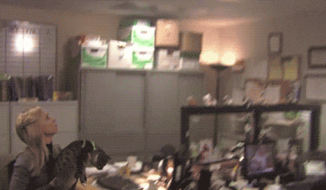
Assessment Briefing
We were thrown into a steaming pot of horror with the assessment briefing. Our assessment details were not completely a surprise as our lecturers had briefed us about it from the start, but the deadline just become jarringly real. There were many things to do! oh no! why is time real! or rather, why are deadlines real!
Workshopping
the workshop
Unfortunately, I was in a slump this week. I'm ashamed to say that I did nothing but play krillion puffer party like an addict. As of 13 November 2026 (which is the day I write this), I have resolved that I will stop. Back to serious things! This week, I created telegram channels for easy broadcasting and needled my participants about sending their available dates for the workshop. Only one has replied so far...ヽ(°〇°)ﾉ I've also completed my workshop consent forms!
On a sidenote, gathering participants for this workshop is actually SO hard, especially coordinating the dates. I'm glad I started (somewhat) early or I would be losing my mind now. I'm also really nervous about the success of the workshop.. but only time (oho) can tell. I really wanted to hold some trial runs, but not sure if thats possible as there may not be enough time (oho)...
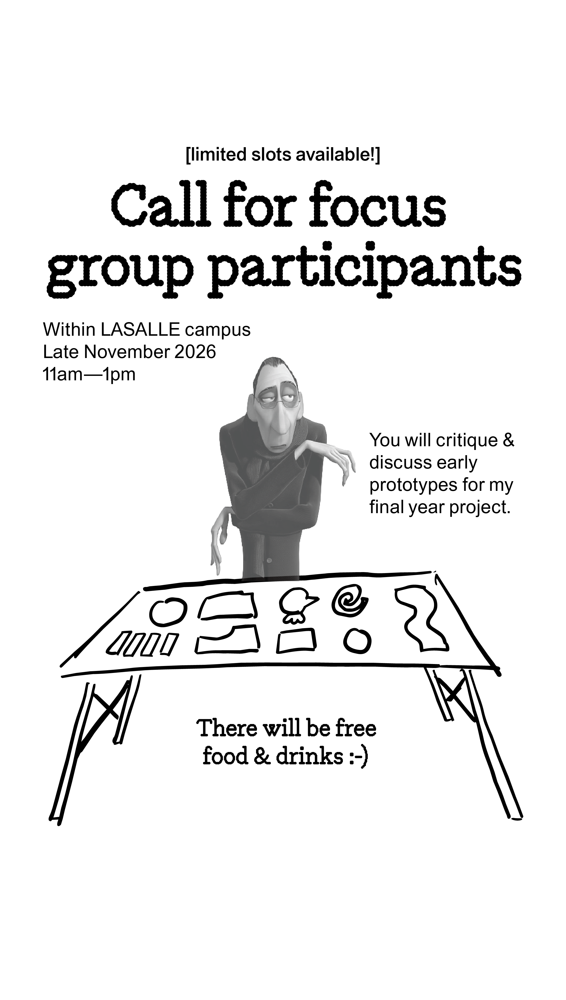
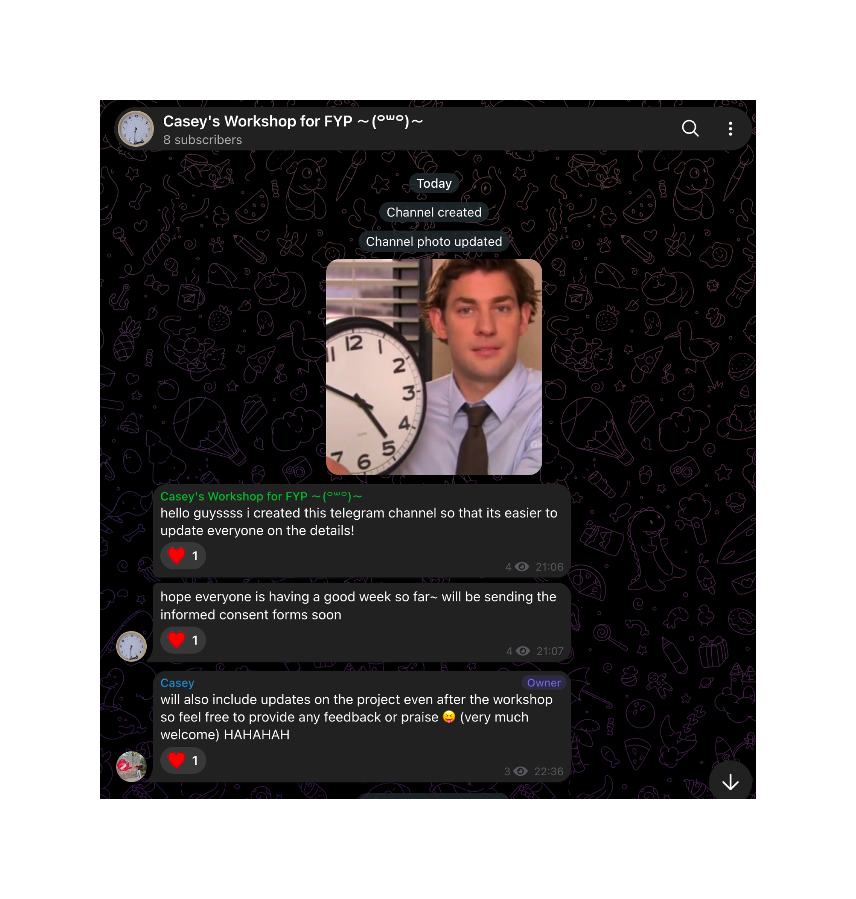
Progress on the speculative objects
Update: I have come up with a name! Unfortunately with the help of Claude. The experiments are now called "Provocative Clocks" which apparently is a reference to the Speculative Everything, which I desparately need to refresh myself on.
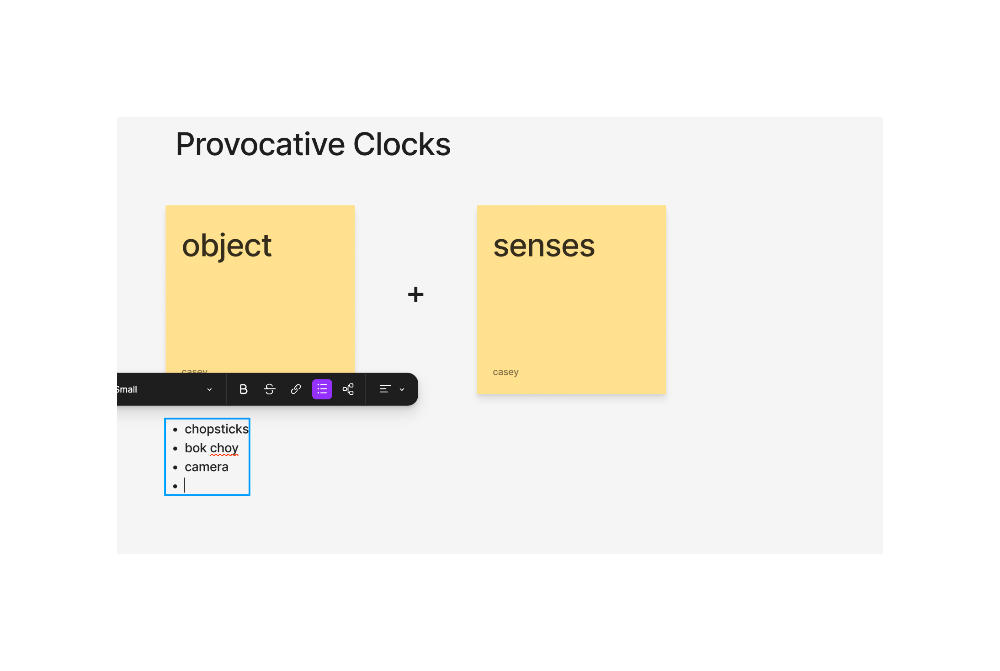
I kickstarted the creation process through gathering a list of objects that I saw around me or I felt was unique to Singapore, then combined them both together. To have as many surprising outcomes as possible, I used a word wheel which helps pull random words from my lists of objects. I was a little stuck while thinking about what objects to include, so I think what would help could be some fieldwork. A book that I read was Georges Perec's "An Attempt at exhuasting a place in Paris" where he made observations through prose, lists and more, recording everything that he observed.
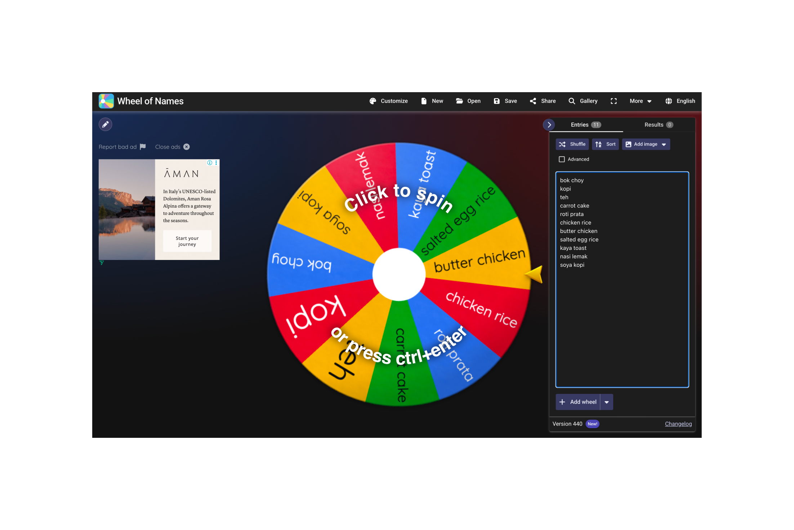
The speculative objects sketches weren't very encouraging for me...I keep doubting myself as it seemed
very nonsenical...but Shu Min gave me some assurance, this was what speculative design is all about! One
way I can think of the logic is how each of these inanimate objects had their own sense of time, for
example, stray cats could think of time through feeding times, their sense of time revolved around food. I
will come back next week with 30!
( ◡̀_◡́)ᕤ
Lasercutting exhibition displays
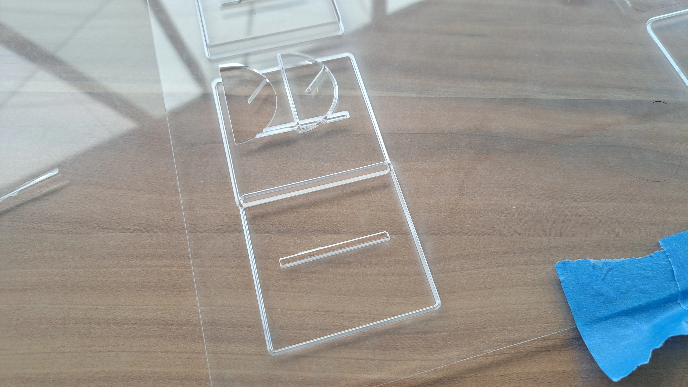
I decided to make some custom displays, like this caption holder here. This was heavily inspired by a reference I saw on pinterest here. Using the time given during our elective, I created an exhibition stand. This isn't very sturdy, might have to buy another arcrylic sheet, probably thicker like 3mm.
Come to think of it, maybe I don't have to be so worried about my display shelves, as I had already crafted a (very expensive) shelving system, the fantastisk formskiftande hylla (which means "the amazing shapeshifting shelf" in swedish), that I had printed during the Year 2 Lasercutting module—so maybe focus on other things?
Sketching showcase display ideas
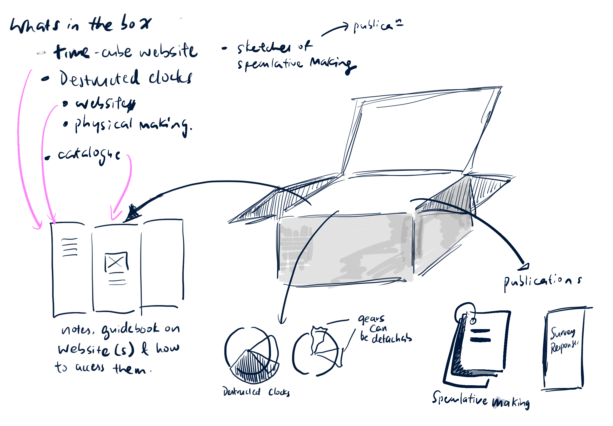
I'm pretty worried about my showcase display as I don't have a visual direction in mind for it yet. I was thinking of red and white since my project focuses on capturing the temporal experience of SINGAPORE. So I thought why not have it in red, to maximise its majulah-ism? But at the same time, it feels on the nose. As of now, I'm thinking of a "ghostly" kind of vibe, like translucency, to capture the ephemeral, philosophical nature of the project. But definitely I want something that you can tell has a human touch, to drive home the point that I'm trying to introduce the humanity to clock time.
As I have learnt from Ines (my lovely deskmate!), colour is subjective and contains meaning, so I can't just randomly choose colours.
I could marry this paper
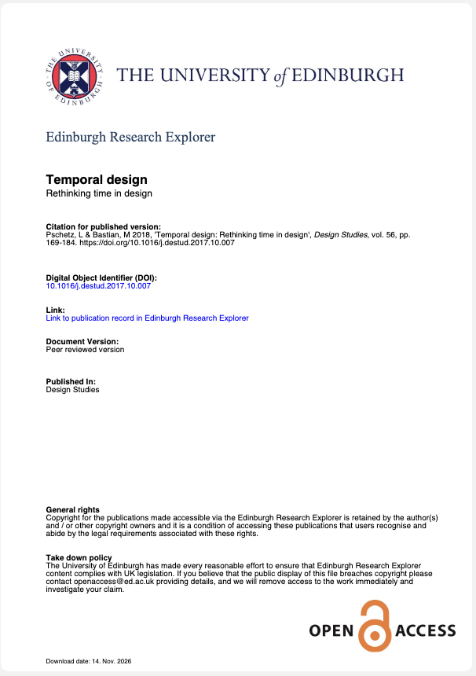
While browsing through my are.na board for inspiration, I came across this paper that I had saved a while ago. While reading it, I realised that it was very aligned with what my topic was: challenging the standards of timekeeping, but most importantly, challenging time through the lens of "social time", rather than the dichotomies of fast/slow or through subjective experience of time.
They propose a new branch of design: Temporal Design, which brings to light the social, cultural and economic aspects of time, which helps in investigating the ways in which these aspects of time shape the "social coordination of particular groups". What makes it better is that the authors also engaged in speculative making, like a printer clock: where initial participants took a photograph whenever they were engaged in an activity. The photographs were later printed out and constructed into a clock, so the users of this clock structure their time based on someone else's past. I feel less alone in the provocative clocks front now!
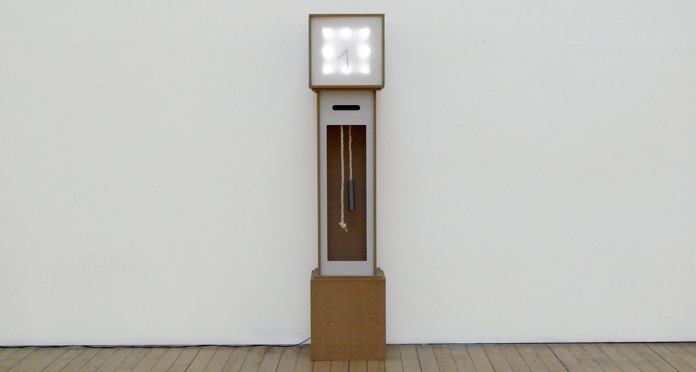
I'm relieved that this paper gave me some ideas on how to justify my speculative making properly, and it is also very interesting, especially in the area of looking at time in the context of the entangled relationships of social time. The videos filmed by Pschetz would also help me later on when thinking of what to document for my focus group.
Another ray of hope
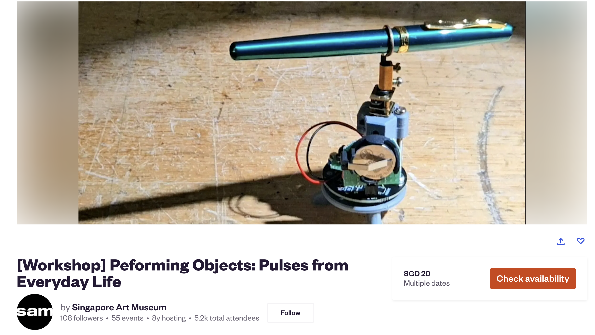
Small update, I also booked a ticket to attend a workshop held by the artist who did the Everyday Clock, which this project thus far is inspired by. One of the major precedents of Time, In a Singlish Accent ! Naturally, I have to go! I am excited to go as I had stalked through the artist's profile, and looked at his workshop pictures, which instilled a deep sense of FOMO in me. This workshop will be held after the submission of this CPJ, so will provide updates on that. Watch out for the update next sem! The image below shows what to expect and bring to the workshop...honestly really excited for this !! I will be gathering some questions to ask him too.
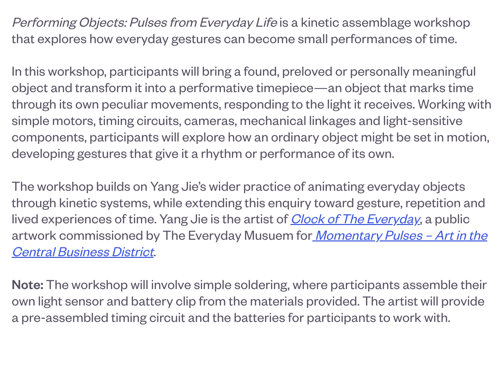
I feel guilty this week...didn't get much done...GAHHH...I need to come up with a systematic schedule to plan my time properly...heh..